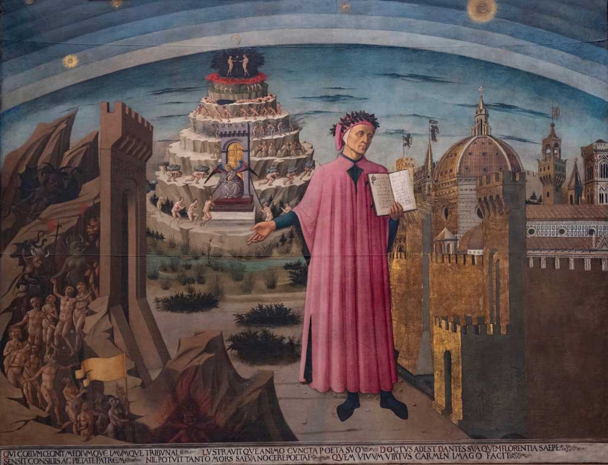

La Divina Commedia
Descrizione
La Divina Commedia, scritta da Dante Alighieri tra il 1304 e il 1321,
è un poema allegorico in terzine che racconta il viaggio immaginario dell’autore attraverso i tre regni dell’aldilà:
Inferno, Purgatorio e Paradiso. Guidato prima dal poeta Virgilio e poi da Beatrice,
Dante attraversa l’oscurità del peccato, la purificazione e infine la salvezza.
L’opera è anche un riflesso della visione medievale dell’universo e della giustizia divina.
Scritta in volgare fiorentino, ha avuto un ruolo fondamentale nella formazione della lingua italiana.
È considerata uno dei più grandi capolavori della letteratura mondiale.

Un Celebre Passo
Nel mezzo del cammin di nostra vita
mi ritrovai per una selva oscura,
ché la diritta via era smarrita.
Torna indietro